The United Nations is an intergovernmental organization aiming to maintain international peace and security, develop friendly relations among nations, achieve international cooperation, and be a centre for harmonizing the actions of nations.
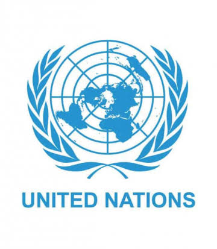
-
Founded: 24 October 1945, San Francisco, California, United States
- Secretary general: Antonio Guterres
The UN was established after World War II with the aim of preventing future wars, succeeding the ineffective League of Nations.On 25 April 1945, 50 governments met in San Francisco for a conference and started drafting the UN Charter, which was adopted on 25 June 1945 and took effect on 24 October 1945, when the UN began operations. Pursuant to the Charter, the organization's objectives include maintaining international peace and security, protecting human rights, delivering humanitarian aid, promoting sustainable development, and upholding international law.At its founding, the UN had 51 member states; with the addition of South Sudan in 2011, membership is now 193, representing almost all of the world's sovereign states.
United Nations Contribution to World peace
PEACE AND CONTRIBUTE
Maintaining Peace and Security
By sending 69 peacekeeping and observer missions to the world’s trouble spots over the past six decades, the United Nations has been able to restore calm, allowing many countries to recover from conflict. There are now 16 peacekeeping operations around the world, carried out by some 125,000 brave men and women from 120 countries who go where others can’t or won’t go.Making Peace
Since the 1990s, many conflicts have been brought to an end either through UN mediation or the action of third parties acting with UN support. Recent examples include Sierra Leone, Liberia, Burundi, the north-south conflict in the Sudan and Nepal. Research credits UN peacemaking, peacekeeping and conflict prevention activities as a major factor behind a 40-per cent decline in conflict around the world since the 1990s. UN preventive diplomacy and other forms of preventive action have defused many potential conflicts. In addition, 11 UN peace missions in the field address post-conflict situations and carry out peacebuilding measures.Clearing Landmines
The United Nations helps to clear landmines in some 30 countries or territories, including Afghanistan, Colombia, the Democratic Republic of the Congo, Libya and the Sudan. Landmines kill or maim thousands of civilians every year. The UN also teaches people how to stay out of harm's way, helps victims to become self-sufficient, assists countries in destroying stockpiled landmines and advocates for full international participation in treaties related to landmines.Combating Terrorism
Combating Sexual Violence in Conflict
Rape has increasingly been used as a weapon of war. An estimated 60,000 women were raped during the civil war in Sierra Leone (1991-2002), up to 60,000 in the former Yugoslavia (1992-1995), up to 250,000 during the genocide in Rwanda (1994), more than 40,000 in Liberia (1989-2003) and at least 200,000 in the Democratic Republic of the Congo since 1998. Sexual violence has characterized conflicts from Afghanistan to Iraq and from Somalia to Syria. The Secretary-General’s Special Representative on Sexual Violence in Conflict has helped countries develop and implement laws that criminalize wartime rape and end impunity for perpetrators; helped countries devise programmes that assist victims to rebuild their lives; provided training for police officers, prosecutors and judges so they are better equipped to address such crimes; and supported the development of specialized units of female police officers that investigate allegations of wartime rape.
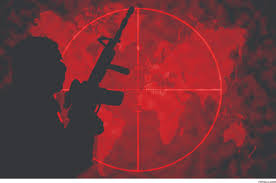
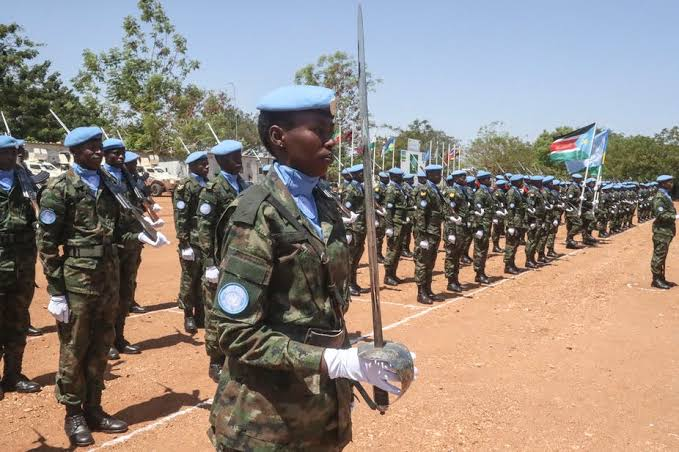
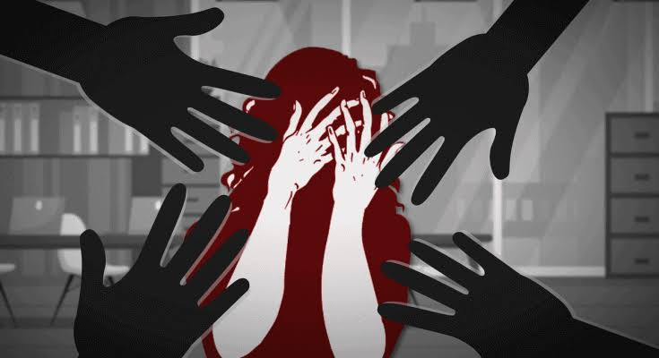
ECONOMIC DEVELOPMENT
Promoting Development
The United Nations has devoted its attention and resources to promoting living standards and human skills and potential throughout the world. Since 2000, this work has been guided by the Millennium Development Goals. Virtually all funds for UN development assistance come from contributions donated by countries. For instance, the UN Development Programme (UNDP), with staff in 170 countries, supports more than 4,800 projects to reduce poverty, promote good governance, address crises and preserve the environment. The UN Children's Fund (UNICEF) works in more than 150 countries, primarily on child protection, immunization, girls' education and emergency aid. The UN Conference on Trade and Development (UNCTAD) helps developing countries make the most of their trade opportunities. The World Bank provides developing countries with loans and grants, and has supported more than 12,000 projects in more than 170 countries since 1947.Alleviating Rural Poverty
The International Fund for Agricultural Development (IFAD) provides low-interest loans and grants to very poor rural people. Since 1978, IFAD has invested more than $15 billion, helping more than 430 million women and men to grow and sell more food, increase their incomes and provide for their families. Currently IFAD supports more than 240 programmes and projects in 147 countries.Focusing on African Development
Africa continues to be a high priority for the United Nations. In 2001, African Heads of State adopted the continent’s own plan, the New Partnership for Africa’s Development, which the General Assembly endorsed in 2002 as the main framework for channelling international support to Africa. The continent receives 36 per cent of UN system expenditures for development, the largest share among the world’s regions. All UN agencies have special programmes to benefit Africa.Promoting Women's Well-being
UN Women is the UN organization dedicated to gender equality and the empowerment of women. A global champion for women and girls, UN Women seeks to accelerate progress on meeting their needs worldwide. UN Women supports countries as they set global standards for achieving gender equality, and works with governments and civil society to design laws, policies, programmes and services needed to implement these standards. It stands behind women’s equal participation in all aspects of life, focusing on increasing women’s leadership and participation; ending violence against women; engaging women in all aspects of peace and security; enhancing women’s economic empowerment; and making gender equality central to national development planning and budgeting.Laying the Groundwork for Business
The United Nations is good for business. It has provided the “soft infrastructure” for the global economy by negotiating universally accepted technical standards in such diverse areas as statistics, trade law, customs procedures, intellectual property, aviation, shipping and telecommunications, facilitating economic activity and reducing transaction costs. It has laid the groundwork for investment in developing economies by promoting stability and good governance, battling corruption and urging sound economic policies and business-friendly legislation.Supporting Industry
The UN Industrial Development Organization (UNIDO) serves as a “matchmaker” for North-South and South-South industrial cooperation, promoting entrepreneurship, investment, technology transfer and cost-effective and sustainable industrial development. It helps countries to manage the process of globalization smoothly and to reduce poverty.Fighting Hunger
The Food and Agriculture Organization of the UN (FAO) leads global efforts to defeat hunger. The goal of universal food security —where people everywhere have regular access to enough high-quality food to lead active, healthy lives—is at the heart of its work. FAO acts as a neutral forum, where all nations meet as equals to negotiate agreements and debate policy. FAO also helps developing countries to modernize and improve agriculture, forestry and fisheries practices in ways that conserve natural resources and improve nutrition.Improving Shipping
The International Maritime Organization (IMO) has helped to make the seas cleaner and shipping—which serves about 90 per cent of global trade—safer and more secure. IMO measures cover all aspects of international shipping—including ship design, construction, equipment, manning, operation and disposal. With the help of IMO, ship losses have fallen and fatalities decreased; pollution incidents—including total oil pollution—are down; and air pollution and pollution from sewage are being addressed. These improvements are taking place even as the amount of cargo carried by sea continues to increase: the total of goods transported by ship reached 9.6 billion tons in 2013.Generating Worldwide Commitment in Support of Children
From Afghanistan to Lebanon and from the Sudan to the former Yugoslavia, UNICEF has pioneered the establishment of “days of tranquillity” and the opening of “corridors of peace” to provide vaccines and other aid desperately needed by children caught in armed conflict. The Convention on the Rights of the Child has become law in nearly all countries. Following the 2002 UN special session on children, 190 Governments committed themselves to a time-bound set of goals in the areas of health, education, protection against abuse, exploitation and violence and the struggle against HIV/AIDS.Improving Global Telecommunications
The International Telecommunication Union (ITU) brings together Governments and industry to develop and coordinate the operation of global telecommunication networks and services. It has coordinated shared use of the radio spectrum, promoted international cooperation in assigning satellite orbits, worked to improve telecommunication infrastructure in the developing world and negotiated the global standards that ensure the seamless interconnection of a vast range of communications systems. From broadband Internet to the latest-generation wireless technologies, from air and sea navigation to radio astronomy and satellite-based meteorology, from phone services to TV broadcasting and next-generation networks, ITU is committed to connecting the world. Its work has helped telecommunications to grow into a $2.1 trillion global industry.Promoting responsible tourism
International tourism arrivals reached 1.1 billion in 2014, generating $1.5 trillion in export earnings. The World Tourism Organization is the UN agency responsible for the promotion of responsible, sustainable and universally accessible tourism. It generates market knowledge, promotes competitive and sustainable tourism policies, fosters tourism education and training, and works to make tourism a tool for development through technical assistance projects in over 100 countries. Its Global Code of Ethics for Tourism seeks to maximize the benefits of tourism while minimizing its negative impact.
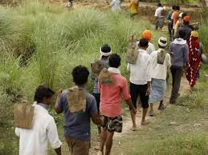
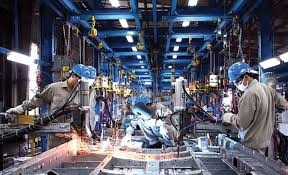
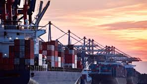
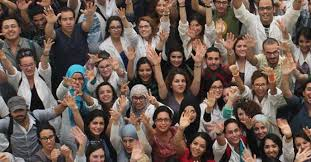
SOCIAL DEVELOPMENT
Improving Literacy and Education
Today 84 per cent of adults can read and write and 91 per cent of children attend primary school. The goal now is to ensure that by 2015 all children complete a full course of primary school. Programmes aimed at promoting education and advancement for women helped to raise the global adult female literacy rate to 79.9 per cent in 2011. The next goal is to ensure that by 2015 all girls complete primary and secondary school.Facilitating Academic and Cultural Exchanges
UNESCO has encouraged scholarly and scientific cooperation, protection of cultural heritage and promotion of cultural expression, including for minorities and indigenous people. The United Nations Academic Impact initiative joins some 1,200 affiliated academic institutions with the United Nations to further the goals of the Organization through activities and research carried out in a shared culture of intellectual social responsibility.Addressing global problems
The United Nations University is a global think tank and postgraduate teaching organization with 13 research and training institutes and programmes in 12 countries. It works with leading universities and research institutes, investigating issues such as global change and sustainable development, development governance, and science, technology, innovation and society. Its postgraduate teaching activities contributes to capacity building in developing countries.Taking the lead on global issues
The first United Nations conference on the environment (Stockholm, 1972) helped to alert world public opinion on the dangers faced by our planet, triggering action by governments. The first world conference on women (Mexico City, 1985) put women's right, equality and progress on the global agenda. Other landmark events include the first international conference on human rights (Teheran, 1968), the first world population conference (Bucharest, 1974) and the first world climate conference (Geneva, 1979). Those events brought together experts and policymakers, as well as activists, from around the world, prompting sustained global action. Regular follow-up conferences have helped to sustain the momentum.
 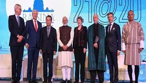
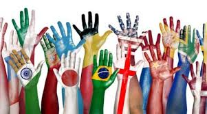
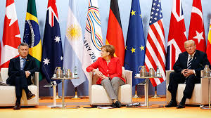
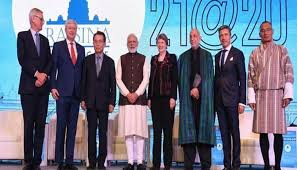
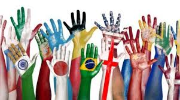
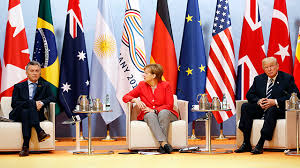
HUMAN RIGHTS
Promoting Human Rights
Since the General Assembly adopted the Universal Declaration of Human Rights in 1948, the United Nations has helped to enact dozens of legally binding agreements on political, civil, economic, social and cultural rights. By investigating individual complaints, the UN human rights bodies have focused world attention on cases of torture, disappearance, arbitrary detention and other violations, and have generated international pressure on Governments to improve their human rights records.Fostering Democracy
The United Nations promotes and strengthens democratic institutions and practices around the world, including by helping people in many countries to participate in free and fair elections. The UN has provided electoral assistance to more than 100 countries, often at decisive moments in their history. In the 1990s, the UN organized or observed landmark elections in Cambodia, El Salvador, South Africa, Mozambique and Timor-Leste. More recently, the UN has provided crucial assistance in elections in Afghanistan, Burundi, the Democratic Republic of the Congo, Iraq, Nepal, Sierra Leone and Sudan.Promoting Women's Rights
A long-term objective of the United Nations has been to improve the lives of women and empower them to have greater control over their lives. The UN organized the first-ever World Conference on Women (Mexico City, 1975), which, together with two World Conferences during the UN Decade for Women (1976-1985) and the World Conference in Beijing (1995), set the agenda for advancing women's rights and promoting gender equality. The 1979 UN Convention on the Elimination of All Forms of Discrimination against Women, ratified by 189 countries, has helped to promote the rights of women worldwide.Combating violence against women
Thirty-five per cent of women and girls globally experience some form of physical and or sexual violence in their lifetime. Some 603 million women live in countries in which domestic violence is not considered a crime. As many as one in four women experience physical or sexual violence during pregnancy. Domestic violence is still condoned in many societies. To address the problem, UN-Women seeks to engage men and boys, works with local partners and supports the adoption of laws against domestic and sexual violence. The United Nations Trust Fund to End Violence against Women has awarded $103 million to 393 initiatives in 136 countries and territories. The global campaign UniTE to End Violence against Women works to raise awareness and increase political will and resources for ending violence against women and girls.Promoting Press Freedom and Freedom of Expression
To allow all people to obtain information that is free of censorship and culturally diverse, UNESCO has helped to develop and strengthen the media and supported independent newspapers and broadcasters. UNESCO also serves as a watchdog for press freedom, and publicly denounces serious violations like the assassination and detention of journalists.
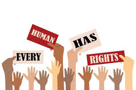
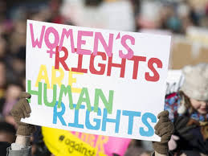
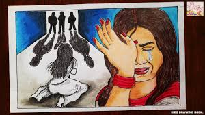
ENVIRONMENT
Protecting the Environment
The United Nations is working to solve global environmental problems. As an international forum for building consensus and negotiating agreements, the UN is tackling global problems such as ozone layer depletion, toxic waste, loss of forests and species, and air and water pollution. Unless these problems are addressed, markets and economies will not be sustainable in the long term, as environmental losses are depleting the natural capital on which growth and human survival are based.Protecting the Ozone Layer
The UN Environment Programme (UNEP) and the World Meteorological Organization (WMO) have been instrumental in highlighting the damage caused to Earth's ozone layer. As a result of a treaty known as the Montreal Protocol, countries have been phasing out chemicals that cause the depletion of the ozone layer and replacing them with safer alternatives. This will spare millions of people from contracting skin cancer because of exposure to increased ultraviolet radiation.Providing Safe Drinking Water
During the first UN decade on water (1981-1990), more than a billion people gained access to safe drinking water for the first time in their lives. By 2002, another 1.1 billion people had clean water. In 2003, the International Year of Freshwater raised awareness of the importance of protecting this precious resource. The second international water decade (2005-2015) aims to reduce by half the number of people without a source of clean drinking water.
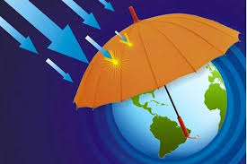
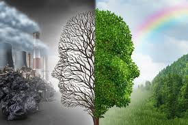
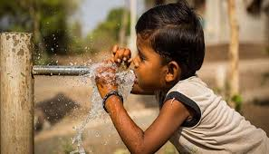
Health
Responding to HIV/AIDS
The Joint United Nations Programme on HIV/AIDS (UNAIDS) coordinates global action against an epidemic that affects some 35 million people. It works in more than 80 countries to provide universal access to HIV prevention and treatment services, as well as to reduce the vulnerability of individuals and communities and alleviate the impact of the epidemic. UNAIDS brings together the expertise of its 11 co-sponsoring UN organizations.Wiping Out Polio
Poliomyelitis has been eliminated from all but three countries—Afghanistan, Nigeria and Pakistan—as a result of the Global Polio Eradication Initiative. Thanks to the Initiative, spearheaded by the World Health Organization, UNICEF, Rotary International and the U.S. Centers for Disease Control and Prevention, more than 10 million people are walking who would otherwise have been paralyzed by polio. A disease that once crippled children in 125 countries is on the verge of being eradicated.Eradicating Smallpox
A 13-year effort by the World Health Organization (WHO) resulted in smallpox being declared officially eradicated from the planet in 1980. The eradication has saved an estimated $1 billion a year in vaccination and monitoring, almost three times the cost of eliminating the scourge itself.
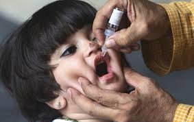
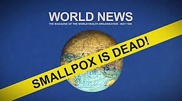
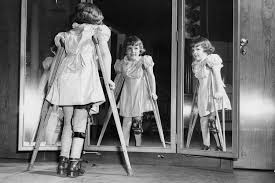
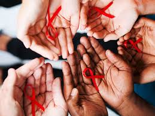